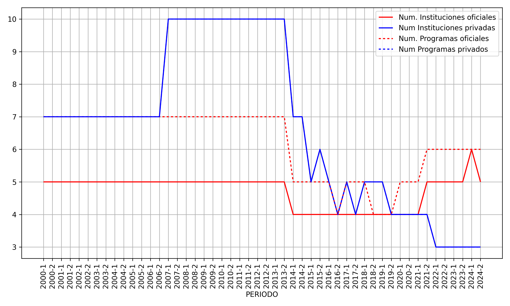
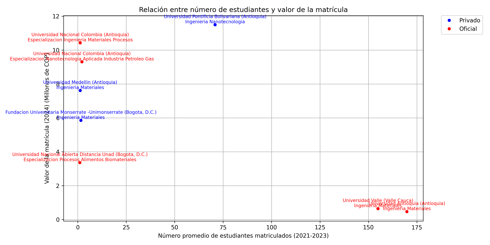
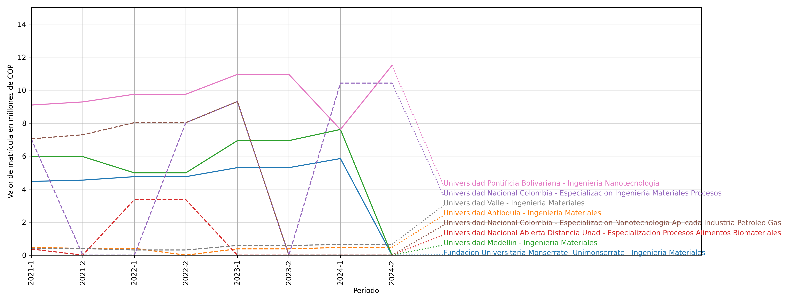
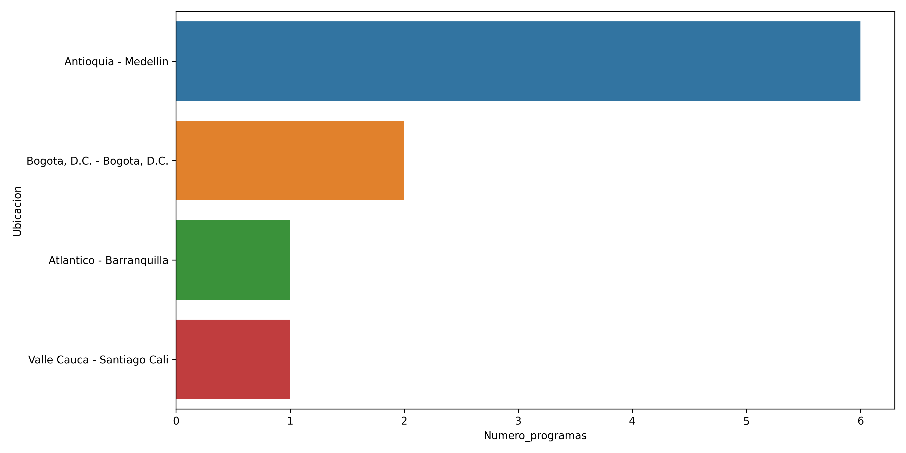
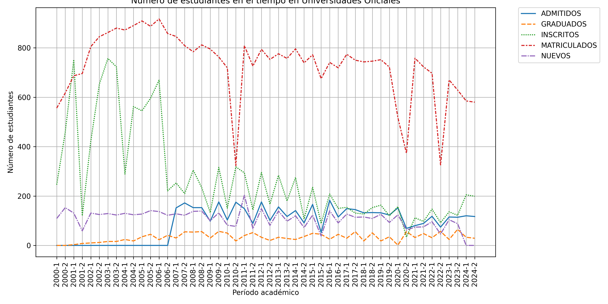
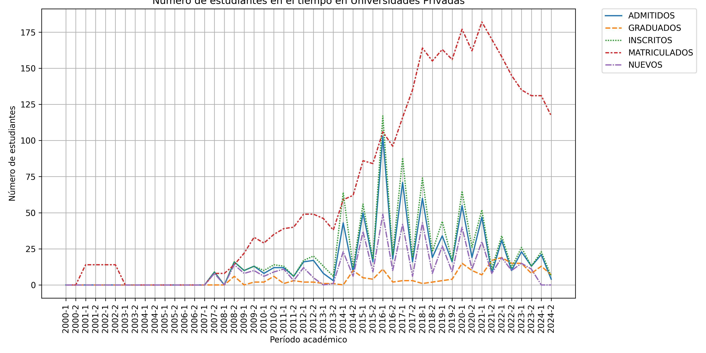
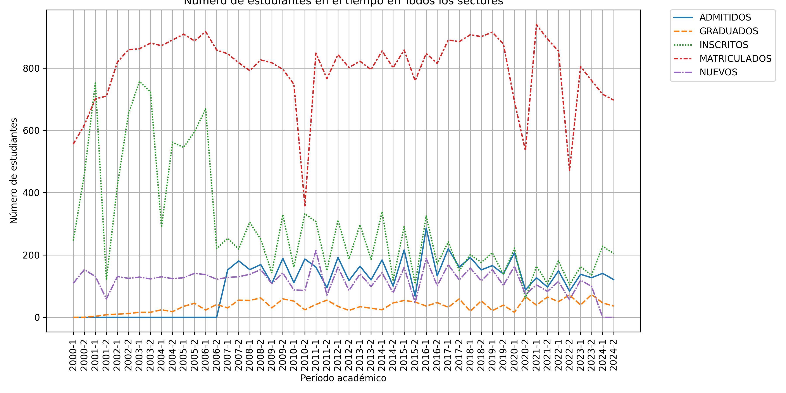

Programa de ingeniería enfocado en materiales a escala nanométrica.

A lo largo del tiempo, predominan las instituciones del sector privado en la mayoría de los periodos hasta 2013, con 7 a 10 instituciones, mientras que el sector oficial mantiene un número constante de 5 instituciones. A partir de 2014, el número de instituciones privadas disminuye progresivamente hasta estabilizarse en 3 desde 2022, mientras que las oficiales se mantienen entre 4 y 6, con un ligero aumento a 6 en 2024-1.
En cuanto a los programas, también predominan los privados en los primeros años, con 7 a 10 programas frente a 7 oficiales constantes. Desde 2014, los programas privados disminuyen de forma gradual hasta 3 en 2022 y se mantienen en ese nivel, mientras que los programas oficiales se mantienen estables en 7 hasta 2013, luego bajan a 5 y finalmente a 6 en los últimos periodos.
Se observa una tendencia clara de estabilidad en el sector oficial tanto en instituciones como en programas durante la mayor parte del periodo analizado, con una ligera recuperación en número de instituciones y programas en 2024. En contraste, el sector privado muestra un crecimiento hasta 2007, estabilidad hasta 2013, y luego una disminución progresiva y sostenida en ambos indicadores desde 2014, sin cambios bruscos pero con un descenso constante.

Las universidades privadas presentan un precio promedio de matrícula considerablemente más alto que las oficiales. El promedio de matrícula para las privadas es aproximadamente 8.3 millones de pesos colombianos, mientras que para las oficiales es alrededor de 3.3 millones. Esta diferencia indica una tendencia clara de precios más elevados en el sector privado.
En cuanto a la cantidad de estudiantes, las universidades oficiales tienen un número promedio de estudiantes matriculados mucho mayor que las privadas. El promedio para las oficiales es aproximadamente 82 estudiantes, mientras que para las privadas es cerca de 18 estudiantes. Esto sugiere que los programas oficiales atraen a un mayor número de estudiantes en promedio.
No se observa una correlación negativa clara entre el precio y la cantidad de estudiantes. Algunos programas privados con matrícula alta tienen pocos estudiantes, pero también hay programas oficiales con matrícula baja y pocos estudiantes. La dispersión de datos indica que el precio no es el único factor determinante en la cantidad de estudiantes matriculados, por lo que no se puede concluir que un precio menor necesariamente aumentaría la matrícula.
Para una universidad privada que considere ofrecer un programa similar, la oportunidad radica en balancear el precio con la captación de estudiantes. Dado que los programas privados tienen precios altos pero pocos estudiantes, podría ser estratégico ajustar la matrícula para hacerla más competitiva y atraer un mayor número de estudiantes, sin perder la percepción de calidad. Además, enfocarse en la diferenciación del programa y en estrategias de marketing podría ayudar a incrementar la matrícula, aprovechando la capacidad de fijar precios más altos que el sector oficial.

Los valores de matrícula en general muestran una tendencia creciente a lo largo del tiempo para la mayoría de los programas, especialmente en las universidades privadas. Por ejemplo, la Fundación Universitaria Monserrate presenta un aumento constante desde 4.47 millones en 2021-1 hasta 5.85 millones en 2024-1, con un valor cero en 2024-2 que podría ser un dato atípico o falta de información. La Universidad Medellín también muestra un incremento desde 5.97 millones en 2021-1 hasta 7.61 millones en 2024-1, con un valor cero en 2024-2. En contraste, las universidades oficiales presentan valores más bajos y con mayor variabilidad, algunos con periodos de matrícula en cero, como la Universidad Nacional Abierta a Distancia (UNAD) y la Universidad Nacional Colombia en ciertos periodos. Sin embargo, la Universidad Nacional Colombia en su programa de Especialización en Ingeniería Materiales Procesos muestra un aumento significativo desde 7.05 millones en 2021-1 hasta 10.42 millones en 2024-1 y 2024-2, indicando que algunos programas oficiales también pueden tener tendencias crecientes.
Comparando los sectores, las universidades privadas tienen valores de matrícula consistentemente más altos y una tendencia más clara de crecimiento en el tiempo. Las universidades oficiales presentan valores más bajos y mayor irregularidad, con varios periodos con matrícula reportada en cero, lo que puede indicar fluctuaciones en la oferta o en la demanda. La diferencia en los valores sugiere que las universidades privadas mantienen una política de matrícula con costos más elevados y estables o en aumento, mientras que las oficiales tienen una estructura de costos más variable y generalmente menor.
El análisis de oportunidad para un programa en una universidad privada indica que existe un mercado con tendencia al alza en los valores de matrícula, lo que puede reflejar una demanda creciente o una disposición a pagar mayor por programas privados. La estabilidad y crecimiento en los valores de matrícula en universidades privadas como la Fundación Universitaria Monserrate, Universidad Medellín y Universidad Pontificia Bolivariana sugieren que un programa nuevo o ampliado en este sector podría beneficiarse de esta tendencia. Sin embargo, es importante considerar la competencia y la necesidad de diferenciar el programa para captar estudiantes dispuestos a pagar matrículas más altas. La oportunidad radica en aprovechar la percepción de valor y calidad que suelen asociarse con las instituciones privadas, así como en diseñar estrategias de marketing y oferta académica que respondan a las demandas actuales del mercado educativo.

Antioquia, con Medellín como su municipio principal, presenta la mayor cantidad de programas académicos (6), lo que refleja una concentración significativa en comparación con otros departamentos como Bogotá, Atlántico y Valle del Cauca, que tienen 2, 1 y 1 programas respectivamente. Esta distribución sugiere que Antioquia, y específicamente Medellín, tiene una vocación económica y educativa más desarrollada o diversificada, posiblemente vinculada a su dinamismo industrial, tecnológico y comercial, que demanda una oferta académica amplia y variada.
La apertura de un nuevo programa en Medellín podría tener una buena oportunidad debido a la alta concentración de programas existentes, lo que indica un mercado educativo activo y una demanda potencialmente alta. Sin embargo, esta concentración también implica una competencia considerable, por lo que el programa debería diferenciarse o alinearse con las necesidades específicas del sector económico local para captar estudiantes.
Para una universidad privada, la oportunidad radica en aprovechar la vocación económica de Medellín, que es un centro de innovación y desarrollo empresarial. La tendencia de concentración de programas en esta ciudad sugiere que existe un ecosistema favorable para la educación superior, pero la universidad debe identificar nichos o áreas emergentes que no estén saturadas para maximizar su impacto y atraer estudiantes. La estrategia debería enfocarse en programas que respondan a las demandas del mercado laboral local y regional, garantizando así la relevancia y sostenibilidad del nuevo programa.



En todos los sectores, se observa que los valores de inscritos y matriculados son relativamente altos y estables a lo largo del tiempo, con matriculados consistentemente superiores a inscritos en varios periodos, lo que sugiere posibles inconsistencias en la definición o reporte de los datos. En universidades oficiales, la tendencia es similar, con matriculados generalmente cercanos o superiores a inscritos, indicando una alta capacidad de absorción y retención en el proceso de matrícula. En contraste, las universidades privadas muestran valores muy bajos o nulos en inscritos y matriculados en los primeros años, con un aumento gradual a partir de 2007-1, aunque los números siguen siendo considerablemente menores que en los otros sectores. Esto indica una menor participación o desarrollo inicial en el sector privado, con una tendencia de crecimiento más reciente.
Respecto a la diferencia entre inscritos y matriculados, en todos los sectores y en universidades oficiales, la cantidad de matriculados supera o es muy cercana a la de inscritos, lo que es atípico, ya que normalmente se esperaría que matriculados sean iguales o menores que inscritos. Esto podría indicar problemas en la captura o definición de los datos. En universidades privadas, aunque los números son bajos, matriculados también tienden a ser iguales o mayores que inscritos en varios periodos, pero con una proporción más variable. La capacidad de absorción en universidades oficiales parece alta, mientras que en privadas es más limitada pero con señales de mejora. La baja inscripción en privadas en los primeros años sugiere menor interés o menor oferta, mientras que la diferencia entre inscritos y matriculados en todos los sectores no permite una evaluación clara sin aclarar la metodología de registro.
Para una universidad privada, el análisis muestra una oportunidad de crecimiento en la matrícula, dado que el sector privado ha incrementado sus matriculados y admitidos desde 2007, aunque aún con números bajos comparados con el sector oficial y total. La baja inscripción inicial indica que hay espacio para captar mayor interés estudiantil. Sin embargo, la universidad debe investigar y mejorar la conversión de inscritos a matriculados, asegurando que los procesos administrativos y de apoyo faciliten la matrícula efectiva. La tendencia creciente en admitidos y matriculados en el sector privado sugiere que con estrategias adecuadas de promoción y acompañamiento, existe potencial para aumentar la participación y consolidar la oferta educativa en este sector.